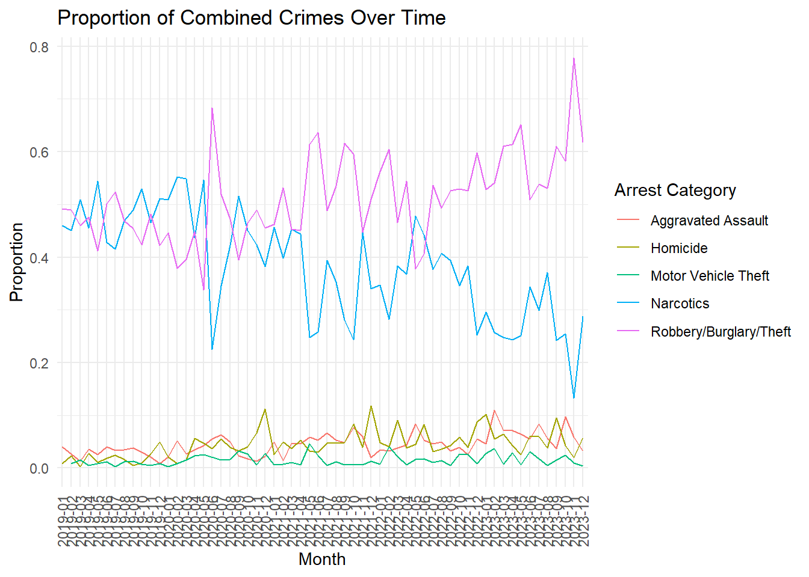

library(ggplot2)
library(dplyr)
Attaching package: 'dplyr'The following objects are masked from 'package:stats':
filter, lagThe following objects are masked from 'package:base':
intersect, setdiff, setequal, unionlibrary(ggplot2)
library(dplyr)
Attaching package: 'dplyr'The following objects are masked from 'package:stats':
filter, lagThe following objects are masked from 'package:base':
intersect, setdiff, setequal, unionarrests <- read.csv("../../data/clean/adult_arrests_dc.csv")
arrests$date<-as.Date(arrests$date)specified_categories <- c("Homicide", "Motor Vehicle Theft", "Aggravated Assault", "Narcotics", "Robbery", "Burglary", "Theft")
subset_arrests <- arrests %>%
filter(arrest_category %in% specified_categories)# Combine Robbery, Burglary, and Theft into one category
subset_arrests <- subset_arrests %>%
mutate(arrest_category = ifelse(arrest_category %in% c("Robbery", "Burglary", "Theft"), "Robbery/Burglary/Theft", arrest_category))
# Convert date column to Date type
subset_arrests$date <- as.Date(subset_arrests$date)
# Extract month and year from date
subset_arrests <- subset_arrests %>%
mutate(month = format(date, "%Y-%m"))
# Group by month and arrest_category, count the number of arrests
crime_counts <- subset_arrests %>%
group_by(month, arrest_category) %>%
summarise(count = n())`summarise()` has grouped output by 'month'. You can override using the
`.groups` argument.ggplot(crime_counts, aes(x = month, y = count, color = arrest_category, group = arrest_category)) +
geom_line() +
labs(title = "Monthly Counts of Combined Crimes",
x = "Month",
y = "Count",
color = "Arrest Category") +
theme_minimal() +
theme(axis.text.x = element_text(angle = 90, vjust = 0.5, hjust = 1))# Combine Robbery, Burglary, and Theft into one category
subset_arrests <- subset_arrests %>%
mutate(arrest_category = ifelse(arrest_category %in% c("Robbery", "Burglary", "Theft"), "Robbery/Burglary/Theft", arrest_category))
# Convert date column to Date type
subset_arrests$date <- as.Date(subset_arrests$date)
# Extract month and year from date
subset_arrests <- subset_arrests %>%
mutate(month = format(date, "%Y-%m"))
# Count total number of arrests per month
total_arrests <- subset_arrests %>%
group_by(month) %>%
summarise(total_count = n())
# Group by month and arrest_category, count the number of arrests
crime_counts <- subset_arrests %>%
group_by(month, arrest_category) %>%
summarise(count = n())`summarise()` has grouped output by 'month'. You can override using the
`.groups` argument.# Merge with total arrests to calculate proportions
crime_proportions <- left_join(crime_counts, total_arrests, by = "month") %>%
mutate(proportion = count / total_count)
# Plot
ggplot(crime_proportions, aes(x = month, y = proportion, color = arrest_category, group = arrest_category)) +
geom_line() +
labs(title = "Proportion of Combined Crimes Over Time",
x = "Month",
y = "Proportion",
color = "Arrest Category") +
theme_minimal() +
theme(axis.text.x = element_text(angle = 90, vjust = 0.5, hjust = 1))
# Filter data to include only specified categories
filtered_data <- subset_arrests %>%
filter(arrest_category %in% c("Homicide", "Motor Vehicle Theft", "Aggravated Assault"))
# Convert date column to Date type
filtered_data$date <- as.Date(filtered_data$date)
# Extract year and month with format for every 6 months
filtered_data <- filtered_data %>%
mutate(month = format(date, "%Y-%m"),
six_month = paste0(substr(month, 1, 4), "-",
ifelse(as.integer(substr(month, 6, 7)) <= 6, "01", "07")))
# Group by 6 months and arrest_category, count the number of arrests
crime_counts <- filtered_data %>%
group_by(six_month, arrest_category) %>%
summarise(count = n())`summarise()` has grouped output by 'six_month'. You can override using the
`.groups` argument.# Plot
ggplot(crime_counts, aes(x = six_month, y = count, color = arrest_category, group = arrest_category)) +
geom_line() +
labs(title = "Counts of Homicide, Motor Vehicle Theft, and Aggravated Assault Arrests",
x = "6-Month Period",
y = "Count",
color = "Arrest Category") +
theme_minimal() +
theme(axis.text.x = element_text(angle = 90, vjust = 0.5, hjust = 1))cars <- read.csv("../../data/clean/crime_dc.csv")library(lubridate)
Attaching package: 'lubridate'The following objects are masked from 'package:base':
date, intersect, setdiff, union# Parse the date strings into POSIXct objects (date-time class)
cars$date <- ymd_hms(cars$report_date)
cars$date <- as.Date(cars$date)cars_aggregated <- cars %>%
mutate(month_year = floor_date(date, "month")) %>%
group_by(month_year) %>%
summarize(theft_count = n())
# Filter the data to include only dates before 2024
cars_aggregated <- cars_aggregated %>%
filter(month_year < as.Date("2024-01-01"))
# Plot the aggregated counts as a line plot
ggplot(cars_aggregated, aes(x = month_year, y = theft_count)) +
geom_line() +
labs(x = "Month-Year", y = "Number of Car Thefts", title = "Monthly Counts of Car Thefts") +
theme_minimal()cars_aggregated <- cars %>%
mutate(year = year(date)) %>%
group_by(year) %>%
summarize(theft_count = n())
# Calculate the year-over-year percentage increase for each year
cars_aggregated <- cars_aggregated %>%
mutate(yoy_increase = (theft_count / lag(theft_count, default = first(theft_count))) - 1)
# Print the result
print(cars_aggregated)# A tibble: 6 × 3
year theft_count yoy_increase
<dbl> <int> <dbl>
1 2019 2187 0
2 2020 3260 0.491
3 2021 3479 0.0672
4 2022 3738 0.0744
5 2023 6782 0.814
6 2024 2 -1.00 cars$district <- as.factor(cars$district)
# Aggregate the number of car thefts by month and district
cars_aggregated <- cars %>%
filter(!is.na(district)) %>%
mutate(month_year = floor_date(date, "month")) %>%
group_by(month_year, district) %>%
summarize(theft_count = n())`summarise()` has grouped output by 'month_year'. You can override using the
`.groups` argument.# Filter the data to include only dates before 2024
cars_aggregated <- cars_aggregated %>%
filter(month_year < as.Date("2024-01-01"))
# Plot the aggregated counts as a line plot
ggplot(cars_aggregated, aes(x = month_year, y = theft_count, color = district)) +
geom_line() +
labs(x = "Month-Year", y = "Number of Car Thefts", title = "Monthly Counts of Car Thefts by District") +
theme_minimal()cars_aggregated <- cars %>%
mutate(year = year(date)) %>%
group_by(year) %>%
summarize(theft_count = n())
# Calculate year-over-year growth percentage
cars_aggregated <- cars_aggregated %>%
mutate(yoy_growth = (theft_count / lag(theft_count, default = first(theft_count))) - 1)
# Filter out the data for the year 2024
cars_aggregated <- cars_aggregated %>%
filter(year < 2024)
# Plot yearly counts as bars and year-over-year growth percentage as a line
ggplot(cars_aggregated, aes(x = factor(year), y = theft_count)) +
geom_bar(stat = "identity", fill = "skyblue", color = "black") +
geom_line(aes(y = yoy_growth * max(theft_count), group = 1), color = "red") +
geom_text(aes(label = paste0(round(yoy_growth * 100, 1), "%")),
hjust = -0.2, vjust = -0.5, color = "red", size = 3) +
labs(x = "Year", y = "Number of Car Thefts",
title = "Yearly Counts of Car Thefts with YoY Growth Percentage") +
theme_minimal()# Assuming your data frame is named cars and contains a column named date
# Aggregate the number of car thefts by year
cars_aggregated <- cars %>%
mutate(year = year(date)) %>%
group_by(year) %>%
summarize(theft_count = n())
# Calculate year-over-year growth percentage
cars_aggregated <- cars_aggregated %>%
mutate(yoy_growth = (theft_count / lag(theft_count, default = first(theft_count))) - 1)
# Filter out the data for the year 2024
cars_aggregated <- cars_aggregated %>%
filter(year < 2024)
# Plot yearly counts as a line plot
p <- ggplot(cars_aggregated, aes(x = year, y = theft_count)) +
geom_line(color = "blue") +
labs(x = "Year", y = "Number of Car Thefts",
title = "Yearly Counts of Car Thefts with YoY Growth Percentage") +
theme_minimal()
# Add labels for year-over-year growth percentages
p + geom_text(data = cars_aggregated, aes(label = paste0(round(yoy_growth * 100, 1), "%"), x = year, y = theft_count),
hjust = -0.2, vjust = -0.5, color = "red", size = 3)